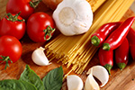
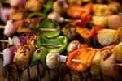
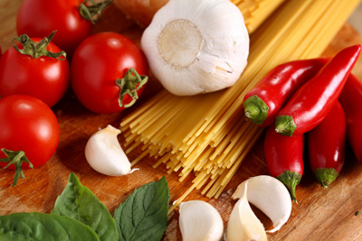
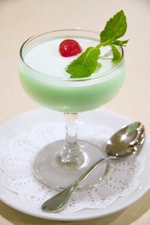

Welcome to Native Cooking of Utah!
If you love to cook like we do, you should enjoy looking around this site. Take a look at our Recipes and take the opportunity to complete our survey.
Explore Our Cooking Gallery
Move your mouse over the thumbnails to view a larger image.



Pasta Ingredients
Featured Tribute

Daisy Daniels - Eureka, Utah
My name is Daisy Daniels and I have enjoyed using the recipes I have found at your web site. I thought I already knew how to cook like a Utahan, but I have been able to expand my repertoire after trying out some of your more unusual offerings.
more >>